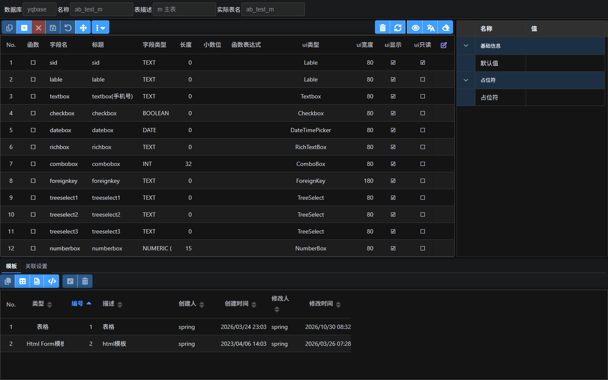
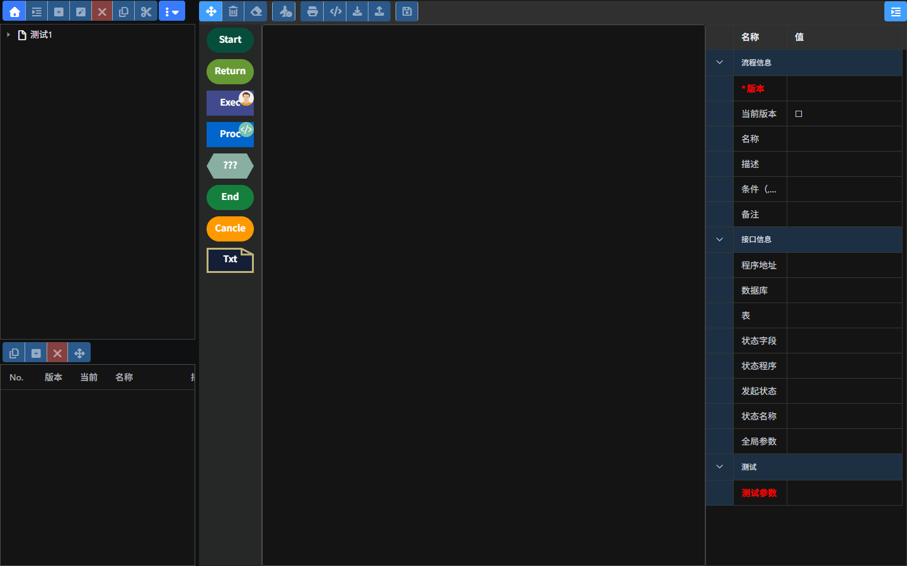
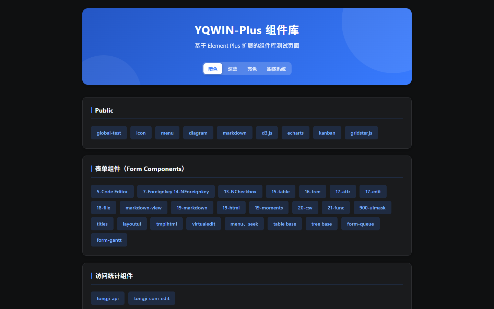

远齐低代码开发平台（UIEIP）¶
一个 Go 单文件，把「数据建模 + 表单 + 权限 + 流程 + 门户 + AI 知识库」都装进一个服务里。 不用再拼 Nginx、脚手架、权限框架、流程引擎四五个中间件，才能搭出一个能用的企业后台。
- 当前版本：v1.0（2026-10-06 定版）
- 开源许可证：MIT
- 本发布包：Windows x64 + SQLite，解压即用，无需安装 Go / Node.js / 数据库 / Web 服务器
- 国内镜像：https://gitee.com/uieip/yuanqi-open | GitHub：https://github.com/uieip/yuanqi-open
它解决什么问题¶
企业后台项目里，业务代码往往只占 20%，剩下 80% 是建模、表单、权限、流程、门户、文件、登录这些“公共设施”。UIEIP 把这些能力做成平台，业务侧只写模型 + 页面 + 服务端 JavaScript：
| 你原本要做的事 | 在 UIEIP 里 |
|---|---|
| 设计表结构、写建表 SQL、写 CRUD 接口 | 可视化建模，自动生成表与通用增删改查接口 |
| 手写表单校验、联动、下拉外键 | 20+ 内置字段组件，模板或拖拽搭建 |
| 自己拼 RBAC、数据范围、按钮权限 | 组织/部门/岗位/人员/角色/菜单/操作标识多层权限 |
| 接入或自研审批流 | 可视化流程设计器 + 会签/或签/比例通过/退回/代审 |
| 对接 OAuth2 / OIDC / CAS / LDAP | 内置统一认证中心与兼容协议 |
| 另外搭一套官网 / 知识库 | 内置门户 CMS 与 AI 知识库（DeepSeek / Ollama + Milvus） |
效果图¶
| 登录页 | 数据建模（字段与属性） |
|---|---|
 |
| 流程设计器 | YQWIN-Plus 组件库 |
|---|---|
 |
 |
3 行跑起来¶
Windows 10/11 或 Windows Server（x64），无需安装任何运行时。
git clone https://github.com/uieip/yuanqi-open.git D:\Spring\yuanqi-open
cd D:\Spring\yuanqi-open; .\uieip-windows.exe
start http://127.0.0.1:8011/adp/ # 账号 spring / 密码 uieip.123
注意目录：随包
config.json使用绝对路径（默认D:\Spring\yuanqi-open）。换目录后需同步修改webpath、db.yqbase.connStr等，详见快速开始。
文档导航¶
- 快速开始：运行环境、启动、登录、配置项、换目录、改端口
- 技术架构：分层结构、请求生命周期、路由与模板引擎、扩展点
- 场景教程
- 迁移与对比：与传统开发/其他低代码对比，开源版 → 正式版迁移
- 部署与运维：Windows 服务、Nginx、HTTPS、日志、备份
- 常见问题
更多细节（服务端、WEB 框架、单点登录、脚本语言、数据库）见发布包内 web/document/ 目录，运行后也可直接访问产品自带的文档页。